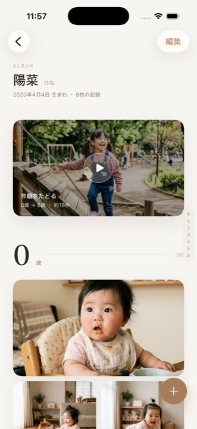
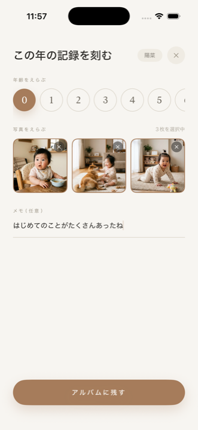
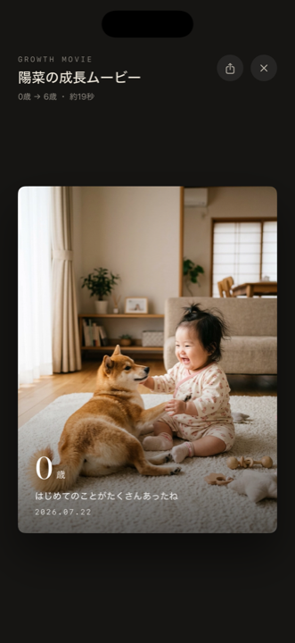

Nenrin
ね ん り ん
木が一年にひとつ輪を刻むように、Nenrin は人のこれまでを一年ずつ写真で積み重ねていく成長アルバムです。0歳から今日まで、年齢のページに写真を残していく。
刻んだ日々は、年齢と日付とことばを添えた一本の成長動画にもなります。機能は最小限に、記録することそのものの静けさだけを残しました。

名前と誕生日だけで、記録がはじまります。誕生日から年齢のページが自動でつくられ、あとは写真を待つだけの状態になります。

その年の記録を選んで残していく。ひと年にひと輪、日付とことばを添えながら、静かに写真が積み重なっていきます。

積み重ねた写真は、年齢・日付・コメント付きの成長動画に。0歳から今へと、一年ずつ流れる一本のフィルムになります。
Nenrin（以下「本アプリ」）は、利用者のプライバシーを尊重し、個人情報の保護に努めます。本ポリシーは、本アプリにおける情報の取り扱いについて説明するものです。
本アプリは、利用者の情報を収集しません。
本アプリの運営者が、利用者の氏名、メールアドレス、位置情報、端末識別子、利用状況などの情報を取得することは一切ありません。アクセス解析ツールや広告配信のための仕組みも導入していません。
本アプリでは、以下の情報を登録できます。
これらの情報は、すべて利用者の端末内にのみ保存されます。外部のサーバーに送信されることはなく、運営者がその内容を閲覧することはできません。
本アプリは、以下の目的で端末の写真ライブラリにアクセスします。
いずれも利用者が操作した場合にのみ実行されます。アクセスを許可しない場合でも、本アプリの他の機能はご利用いただけます。
本アプリで作成した成長動画は、端末内で生成されます。動画が外部に送信されることはありません。
利用者が共有機能を用いて動画を他のアプリやサービスに送信した場合、その後の情報の取り扱いは、送信先のサービスのプライバシーポリシーに従います。
登録された情報は端末内にのみ保存されるため、以下の場合には情報が失われます。
運営者がこれらの情報を復元することはできません。大切な記録については、写真アプリなど別の場所にも保存しておくことをおすすめします。
本アプリは利用者の情報を取得しないため、第三者へ提供することもありません。
本アプリは、お子様の成長記録を残す用途で利用されることを想定しています。前述のとおり、登録された写真や情報が外部に送信されることはありません。
本ポリシーの内容は、必要に応じて変更することがあります。重要な変更を行う場合は、本ページにて告知します。
本アプリまたは本ポリシーに関するお問い合わせは、下記のフォームよりご連絡ください。
制定日：2026年7月22日
最終更新日：2026年7月22日
Nenrin
Miyako Sato